[ ← Jaehyun Lee ]
October 2026
I now have an exciting opportunity to bring our research artifact, called P4-SpecTec, into real-world use. Bringing a research artifact into practical use requires a lot of polishing, and rethinking the implementation language is one part of that process. Our tool, P4-SpecTec, was originally implemented in OCaml, but I decided to port it to Rust. This is a daunting task, as the OCaml implementation spans roughly 42K lines of code. So I used AI agents to help with the port. In this post, I share my personal experience of using AI agents to port P4-SpecTec from OCaml to Rust.
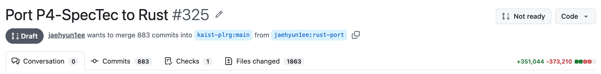
The port is nearly complete, and the trajectory so far is available in my own fork of the P4-SpecTec repository: https://github.com/jaehyun1ee/p4-spectec.
P4-SpecTec is a language specification (spec) mechanization framework for the P4 programming language1. From a mechanized P4 language spec, that is, a definition of P4’s syntax and semantics written in a spec language, P4-SpecTec automatically derives a P4 spec document in prose, a P4 type checker, and a P4 interpreter. It is intended to reduce the burden of maintaining the P4 spec and clarify parts of the P4 semantics that are described ambiguously in the English prose of the current official specification.
For example, the figures below show how the current official P4 spec and the mechanized P4 language spec define the static semantics of P4 if statements.
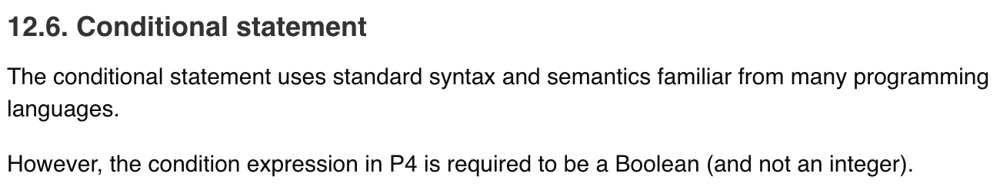
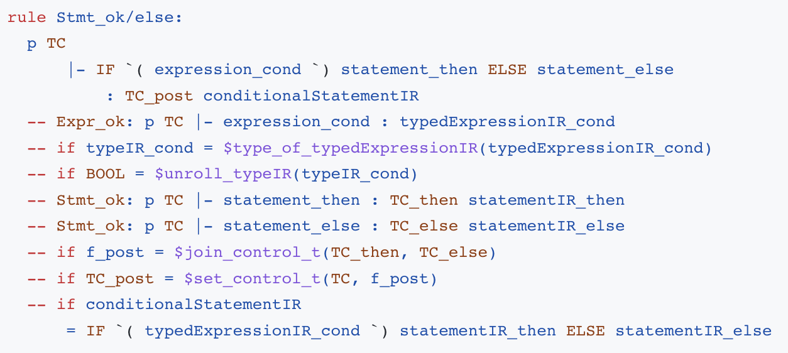
The mechanized spec defines the if statement typing rule, in an inference rule format (but with the premises below the conclusion, not above it). Under context p and TC, we type check an if statement, checking whether all premises are satisfied. For instance, the third premise, -- if BOOL = $unroll_typeIR(typeIR_cond) checks that the condition expression has Boolean type (after unrolling all enclosing typedefs). This mechanized spec, written in the P4-SpecTec spec language, can be parsed and processed by the P4-SpecTec framework.
More abstractly, P4-SpecTec can be seen as a language implementation. The P4-SpecTec spec language is yet another programming language, designed for writing programming language specs. Given a language spec written in this spec language, P4-SpecTec parses and type checks the spec, compiles it into internal representations, and interprets the compiled spec. So, roughly speaking, the codebase being ported is a parser + compiler + interpreter implementation.
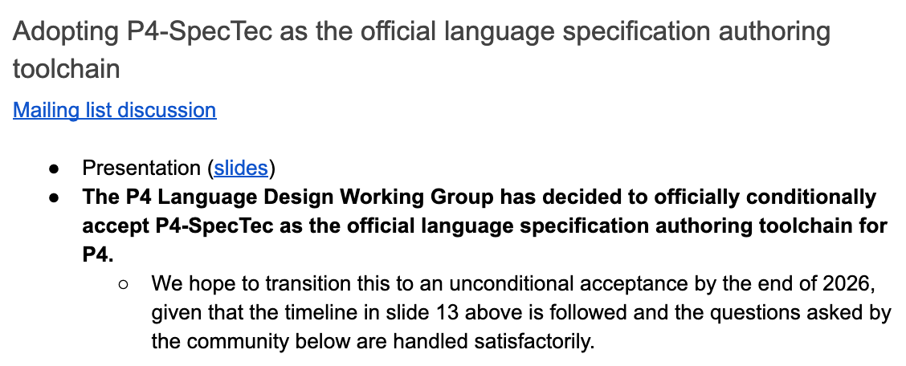
P4-SpecTec has been conditionally adopted as the official specification authoring toolchain for P4. The adoption depends on several requirements, including long-term maintenance of the tool. Long-term maintenance covers a wide variety of concerns, but one important question is who will be able to work on the codebase. I am of course happy to maintain the tool, but P4 language designers and developers should also be able to understand, modify, and contribute to it.
OCaml is a good language for writing interpreters and compilers, but I do not expect many people in the P4 community to be familiar with it. On the other hand, I expect Rust to be more accessible to potential contributors. This does not remove the need to learn how P4-SpecTec works, but I hope it lowers the barrier to getting started.
On a more personal note, I saw the port as an opportunity to revisit the implementation and improve a few things that had been bothering me. Trying new optimizations was one of them. One of the major features in P4-SpecTec is executing the mechanized spec. P4-SpecTec compiles the mechanized spec into an intermediate representation, which it then executes using an interpreter. For example, we can execute the compiled version of the if statement typing rule shown above, with a P4 if statement as input.
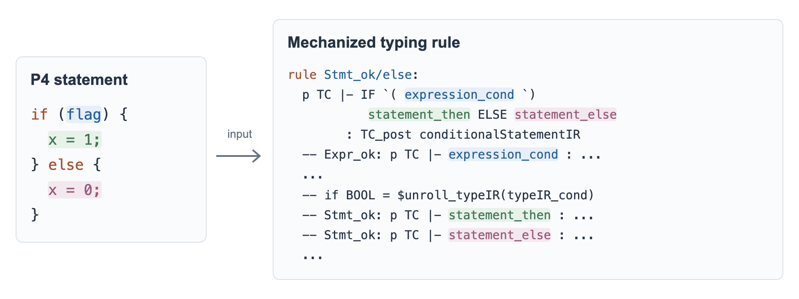
Whenever we update the P4 spec, we want to check the updated spec against a set of P4 test programs. For static semantics, we test about 1,300 P4 programs; for dynamic semantics, we run over 2,000 packet I/O tests on several hundred P4 programs.
This takes up to eight minutes with our OCaml implementation, even though we have already tried various optimizations in it. P4 language designers using our tool would face the same problem. Validating even a small update to the mechanized P4 spec could mean waiting several minutes.
I saw room for improvement, particularly in the choice of data structures. However, changing those structures throughout the OCaml codebase, with its roughly 42K lines of code, would require substantial changes. I wanted to use the port as a chance to try different data structures and reduce the cost of executing the spec.
I started implementing the Rust port on August 24, 2026. As of October 1, it has been 38 days (about five and a half weeks), and I am now preparing to release the Rust version. I initially estimated that it would take two weeks, but it turned out that reviewing AI-generated code took more time and effort than I expected. Throughout this period, I worked on the port full-time.
All work done by AI agents was submitted as PRs on GitHub. That is, AI agents never pushed to the main branch. I reviewed all PRs submitted by AI agents, asked the agents to make fixes and refactor the code, and then merged the PRs.
The work falls into four areas: (i) porting the P4-SpecTec features (parser + interpreter + compiler), (ii) adding code comments rendered by rustdoc, (iii) porting the error diagnostics from the OCaml implementation, and (iv) preparing to deprecate the OCaml code and merge the Rust version into the upstream repository.
The calendar below is a rough summary of the effort. Each cell represents a day and shows the PRs merged on that date. The colors distinguish (i)-(iv).
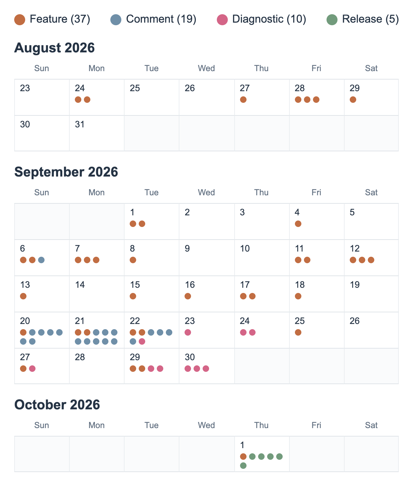
I asked Codex to collect statistics from the Git history, PRs, and local AI conversation logs, and turn them into the following infographics.
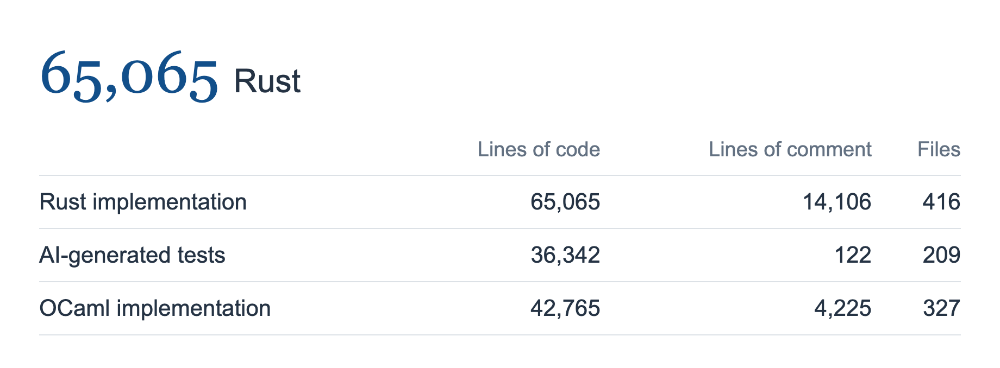
In total, I ported about 42K lines of OCaml code to 65K lines of Rust code, including the end-to-end test driver. The agents also generated about 36K lines of additional tests, which I later removed. I personally read all of the Rust implementation code, although I did not review the generated tests.
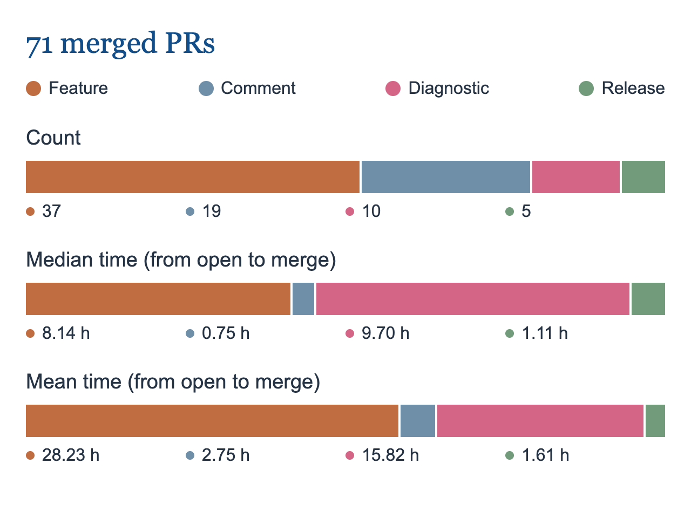
I reviewed and merged 71 PRs. The times above measure the interval from opening a PR to merging it. Some PRs also overlapped: when they had no dependencies on one another, I reviewed up to three in parallel.
Feature PRs took the largest portion, but diagnostics PRs took a similar amount of time. Substantial work had already been done on diagnostics in the OCaml implementation (by Seokhun Jeong), and the Rust version added some more specific explanations. I had to imagine how users might make mistakes, decide on an informative error message, and find a clean way to implement it.
The following are the error messages for the same mistake in a mechanized specification: the former is from the original OCaml implementation released as our research artifact, and the latter is from the Rust version.
function-otherwise-function-call.watsup:9.1-11.31:
cannot have non-pure premises alongside an otherwise premiseerror[algo/otherwise-function-call-invalid]: an `otherwise` body cannot call a function
┌─ function-otherwise-function-call.watsup:11:18
│
10 │ -- otherwise
│ --------- `otherwise` body starts here
11 │ -- debug $(1 + $identity(0))
│ ^^^^^^^^^^^^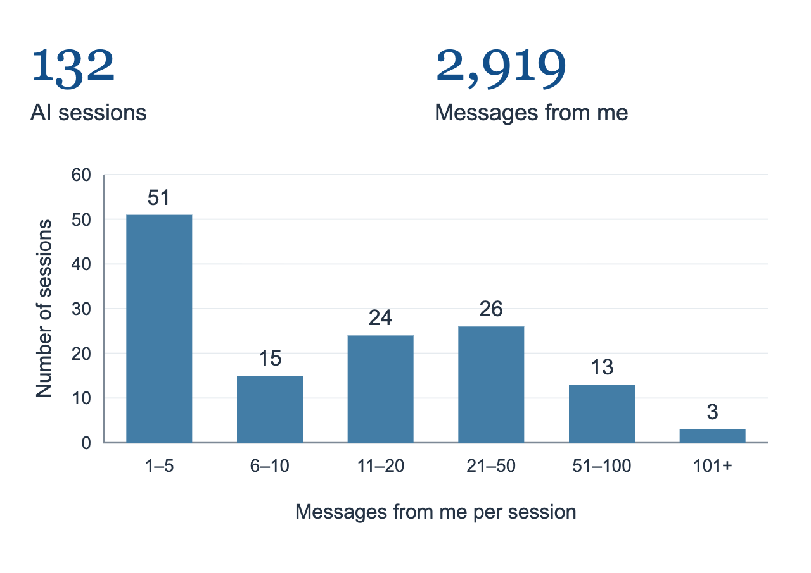
The porting effort involved 132 AI sessions: 116 in Codex and 16 in Claude Code. Together, they contained 2,919 messages from me, excluding subagent sessions. Some sessions involved repeated rounds of review and refactoring. These message counts give a sense of how much back-and-forth the work involved.
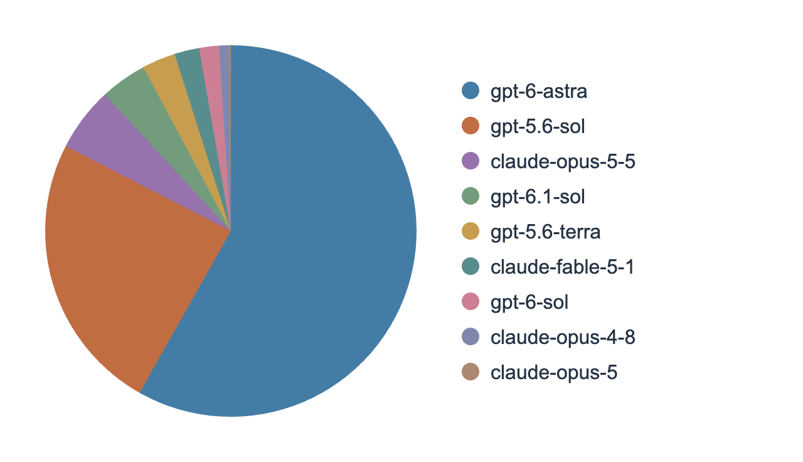
I started with GPT-5.6 Sol, then switched to GPT-6 Astra when it was released. After Claude Opus 5.5 was released, I alternated between Astra and Opus. I mainly used Astra with high reasoning effort. GPT-5.6 Sol was already capable enough for the porting work, but Astra and Opus were even better at capturing my intent.
Context management also felt different from my experience with models I had used before, such as Claude Opus 4.8. With those models, I had to be careful with the context window, because after context compaction, models would start forgetting what they were doing. But with GPT-5.6 Sol, this wasn’t much of a problem. I just let context compaction happen and carried on.
Astra was surprisingly good at understanding what I meant, even when I phrased it very loosely. I usually communicated with the agents in Korean (my mother tongue). In each refactoring session, I would tell the agent, “커밋하고 푸시해”, which means “commit and push”. “커밋” and “푸시” are Korean transliterations of “commit” and “push”. I got tired of typing the full phrase, so I shortened it to “커밋+푸시”, or “commit+push”. Then one day I decided to type just “커푸” (equivalent to “copu”), taking the first syllable of each word. Astra even understood “ㅋㅍ” (that’s maybe “cp”), just the initial consonants of those two syllables.
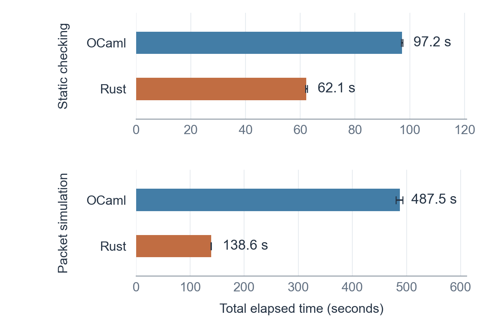
Yes, the static semantics tests run 1.56 times faster in Rust, and the packet simulation tests run about 3.52 times faster. But I believe much of this improvement comes from the additional optimizations I introduced during the port, rather than from Rust itself. Some of these optimizations include:
These optimizations seem to be basic compiler implementation techniques, but they were quite powerful here. I think they are worth explaining, perhaps in another post. People I met during the Rust port recommended these ideas. Many thanks to them!
Throughout the port, I planned the work with AI agents, asked them to implement it, and reviewed the resulting code. From here I give a high-level overview of how I guided the agents through planning, implementation, and code review. These are fairly basic ways of using AI, but I hope sharing the details will be useful to someone.
Two notes before proceeding:
All four areas, (i) features, (ii) comments, (iii) diagnostics, and (iv) release, were split into smaller tasks, with plans drafted by AI agents.
The plans were tracked in two separate places: the GitHub issue tracker and local plan files that were not tracked in git. The separation was deliberate. I used the GitHub issues as a dashboard to discuss high-level milestones and track porting progress with the agents, without getting into details such as API design or code organization. For example, the image below shows part of the issue tracking progress on (i) features.
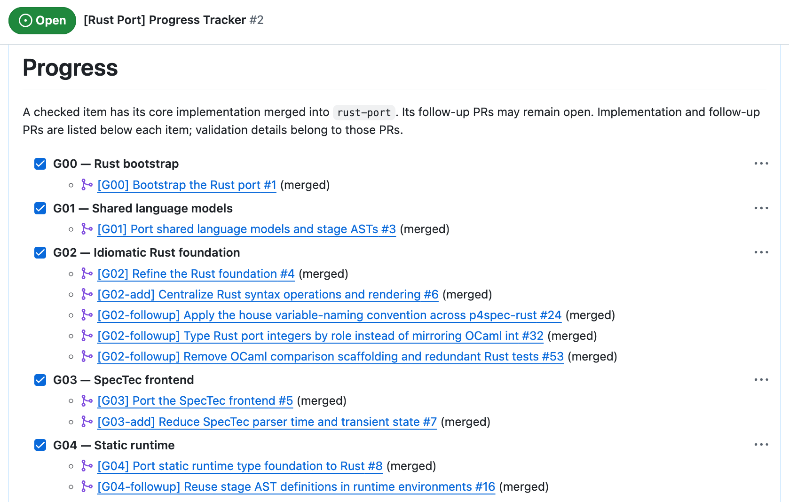
The local plan files covered the same tasks but contained much more implementation detail. I let AI agents use these files as scratchpads, leaving notes for other agents working on follow-up tasks. I did not read these files myself. Across the four areas, these local planning and working documents amounted to 184 markdown files and roughly 17,000 lines. Since these files served as working notes for the agents, I kept them out of Git.
The separation helped me stay focused on the overall direction. Without it, conversations could easily go down a rabbit hole of implementation details, making me lose sight of the bigger picture.
AI was diligent in implementing, but the code it produced was quite often ad-hoc, reinvented the wheel, or was over-engineered. Some examples:
// Before: the last argument selects the kind of relation
let def = elab_rel_def(ctx, span, &def.id, &def.not_typ, &def.hints, true)?;
let def = elab_rel_def(ctx, span, &def.id, &def.not_typ, &def.hints, false)?;
// After: separate functions make the distinction explicit
let def_il_kind = elab_extern_rel_def(ctx, &extern_rel_def)?;
let def_il_kind = elab_rel_def(ctx, &rel_def)?;pub fns that were called only by tests, never by the implementation itself. Without careful review, those functions could slip into the codebase and become additional code to maintain.Reviewing each PR was slow and exhausting. I would start reviewing PRs at 9:30 a.m. and feel drained by about 3 p.m. To be honest, I sometimes lost my cool. In one of the most frustrating moments, Codex created test code for the test code:
Why does the test driver itself have a
mod tests?
Here are a few decisions, or tips, that kept me sane (most of the time).
The AI-generated plans were detailed enough that I could simply tell the agents:
Read plan G02 in the issue tracker and in the local plan files, and implement that. After implementing, create a PR.
I would give these instructions before going to bed and let the agents work overnight. In the morning, I would check whether the PRs were ready and spend the day reviewing them.
I usually did not start a new implementation session during the day. Otherwise, new PRs would arrive faster than I could review them, and the pile of unmerged PRs would become increasingly difficult to manage.
After each PR refactoring session, I would ask the agents to summarize what they had learned during the session:
What have you learned from this long conversation with me? What knowledge can you transfer to other sessions?
I used these summaries as input to subsequent implementation and review sessions. For each new PR, I opened a new session, sometimes using a different model, and asked for an adversarial review:
Do an adversarial review of PR #35:
- Is the code idiomatic Rust?
- Are function and variable names consistent with the rest of the codebase? Is function ordering consistent?
- Are there unnecessary abstractions added in Rust that do not exist in OCaml?
- Is there unnecessary code or an API added only for testing? If so, it should not exist.
Why do I ask about variable names and function ordering?
I only read and ran the ported Rust code, but did not actively write Rust. When reviewing, I wanted to understand its intent at a glance, without repeatedly stopping to work out what it meant. Consistent variable naming and function placement helped with this. I wrote down these conventions in a local skill.
(1) Name variables by their type, role, and intermediate spec-language stage
Exp uses the prefix exp.Exp, the implementation uses:el::ExpKind::Bin(exp_l, op, exp_r) =>
infer_bin_exp(ctx, &exp.span, exp_l, *op, exp_r),let exp_l_il = unwrap!(infer_exp(ctx, exp_l));
let exp_r_il = unwrap!(infer_exp(ctx, exp_r));With these rules, the names alone give me a good sense of what the code is doing. Compare the following versions of the same code.
// Without the naming convention
let text_type = typ_at(il::TypKind::Text, &base.span);
let base_checked = unwrap!(elab_exp(ctx, &ExpExpect::plain(&text_type), base));
let index_type = typ_at(il::TypKind::Num(prim::num::Typ::Nat), &index.span);
let index_checked = unwrap!(elab_exp(ctx, &ExpExpect::plain(&index_type), index));
// With the naming convention
let typ_text_il = typ_at(il::TypKind::Text, &exp_base.span);
let exp_base_il = unwrap!(elab_exp(ctx, &ExpExpect::plain(&typ_text_il), exp_base));
let typ_nat_il = typ_at(il::TypKind::Num(prim::num::Typ::Nat), &exp_idx.span);
let exp_idx_il = unwrap!(elab_exp(ctx, &ExpExpect::plain(&typ_nat_il), exp_idx));The names distinguish spec expressions from spec types, the base role from the index role, and EL inputs from IL results.
Sometimes, the convention produces long variable names. A short and crisp name is preferable, but inventing a perfect name can become another rabbit hole. Given the amount of code to port, I preferred a fixed set of rules that made names consistent and easy to recognize.
(2) Keep related functions together in a predictable order
P4-SpecTec is a compiler + interpreter implementation. Much of the code recursively traverses the spec language’s AST. I used the following conventions to make that structure easier to follow:
// == for major sections and // - for smaller groups within them.For example, the spec expression type-inference code follows this layout.
// == Expressions
fn infer_exp(ctx: &mut Context, exp: &el::Exp) -> Backtrack<il::Exp> {
let result = match &exp.node {
el::ExpKind::Bool(value) => infer_bool_exp(ctx, &exp.span, *value),
el::ExpKind::Num(_, value) => infer_num_exp(ctx, &exp.span, value),
// Other match arms omitted
};
/* ... */
}
// - Boolean expression inference
fn infer_bool_exp(...) { /* ... */ }
// - Number expression inference
fn infer_num_exp(...) { /* ... */ }The dispatcher gave me an overview of the cases, and the handlers let me focus on each case separately. The section comments made the organization easy to scan. Together, these conventions reduced the amount of jumping around I had to do while reviewing.
I used superpowers3, a collection of skills that guides AI agents through planning, implementation, testing, and code review. One of its central principles is test-driven development. Agents are instructed to write a test, check that it fails initially, and then implement the code needed to make it pass. I did not assess whether superpowers produced observably better results, but I generally believe that having concrete tests helps agents check their work.
This means that each PR contains (i) the ported Rust code and (ii) tests for that code. Reviewing (i) was already demanding, and reviewing (ii) would have added substantially to the effort. Thus, I asked the agents to keep the generated tests in a separate directory from the main implementation and deliberately skipped them during code review.
The project was organized as follows:
plan/ # local plan files that are not tracked in Git
p4spec-rust/
├── src/ # ported Rust
├── test/ # AI-generated tests
└── test-e2e/ # end-to-end testssrc contains the ported Rust code, with no test code, such as unit tests marked with #[cfg(test)]. All AI-generated tests were kept in the test directory. We also needed end-to-end tests to check that the P4-SpecTec features had been correctly ported: for instance, that it can correctly parse the mechanized P4 spec and execute it given P4 programs as input. (These are the tests mentioned in Section 2.) They were kept in test-e2e, and I reviewed them.
After the port was complete, I dropped all code in the test directory. Much like the local plan files, these tests were intended to help the agents during development, and I do not think they have much value beyond that.
Among many things, here is one thing I prefer in Rust, and one thing I miss from OCaml.
free_* functions in OCaml. In Rust, I can define a trait with a single free_ids method across these types.let rec free_exp (exp : exp) : t = (* ... *)
and free_arg (arg : arg) : t = (* ... *)
and free_args (args : arg list) : t =
args |> List.map free_arg |> List.fold_left ( + ) emptypub trait FreeIds {
fn free_ids(&self) -> IdSet { /* ... */ }
fn free_ids_into(&self, ids_free: &mut IdSet) { /* ... */ }
}
impl<T: FreeIds> FreeIds for [T] {
fn free_ids_into(&self, ids_free: &mut IdSet) { /* ... */ }
}
// Call-sites
let frees_l = exp_l.free_ids();
let frees_r = exp_r.free_ids();
// ...
let frees_args = args_input.as_slice().free_ids();dune’s automatic cleanup of obsolete build artifacts. On my machine, with dependencies already compiled, a clean release build took 24 seconds with dune build --profile release and 65 seconds with cargo build --release. Also, dune automatically removes build artifacts that no longer correspond to the current build rules, whereas cargo does not currently garbage-collect obsolete build artifacts in target. I have to clean those up myself with cargo clean. At one point, I had only 2.7 GiB of free disk space left.And one small addition: we now have a progress bar for tests in the Rust version! In the OCaml version, the test driver gave no visual feedback on how far the tests had progressed, but in the Rust version I added a progress bar. Sometimes, a tiny, tiny feature matters a lot. Actually, this is the feature that I like the most! (And yes, it has little to do with the Rust port itself.)
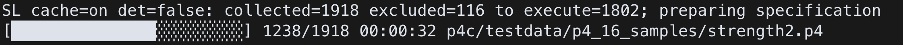
So, did I achieve what I set out to do in 2. Why port from OCaml to Rust?
Long-term maintenance remains an open question. Making the implementation language more accessible is only part of the work. Contributors also need to understand the P4-SpecTec toolchain. I hope the move to Rust lowers the initial barrier, but it will take time to find out whether the implementation remains easy to understand and modify.
The tests are running much faster in the Rust version. Seeing the Rust implementation start to run faster than the OCaml version was one of the most satisfying moments of the project.
The past month was demanding, but also exciting. A year ago, porting 42K lines of OCaml code to Rust, alone, in a single month, would have been unimaginable.
And how do I feel about using AI agents? They are extremely smart and relentless developers, but making use of that ability and carrying an AI-driven project through to completion still requires human perseverance.
Yes, the port could have been driven entirely by AI agents. There was already a working OCaml implementation and end-to-end tests. Agents could have easily ported that to Rust. In fact, the implementation sessions alone add up to only about 100 hours. In that respect, maybe, spending a month reviewing code was a waste of time.
But what happens afterwards? Who would maintain that Rust code? I see two problems. First, I wouldn’t have understood how the Rust version worked, so I wouldn’t have been able to make informed decisions about adding new features, fixing bugs, and so on. AI could have helped me make those decisions, but I wouldn’t have felt confident about them. Second, without being involved in the code, I would have had little interest in or attachment to the project. And without a user or an active maintainer, a project dies. Here are my concluding thoughts:
[ ← Jaehyun Lee ]